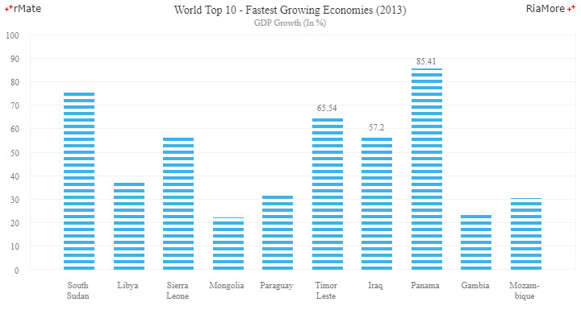
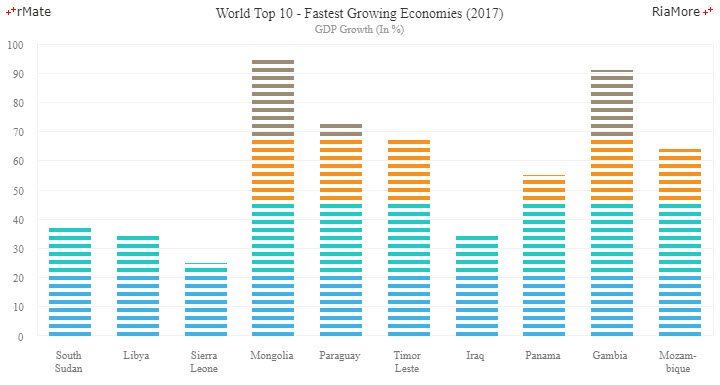

이퀄라이저 차트
이퀄라이저 차트의 숫자 축은 차트의 왼쪽에 세로 축(Y 축)으로 표시되고, 카테고리 축은 차트의 하단에 가로 축(X 축)으로 표시되며, 데이터의 크기는 세로 막대의 길이로 표현된다는 면에서 컬럼 차트와 동일하지만, 표현되는 세로 막대는 이퀄라이저 모양을 한 여러 개의 작은 막대로 이루어집니다.
데이터 값의 크기에 따라서 이퀄라이저 모양을 한 작은 막대의 개수가 정해지고, 막대의 넓이는 컬럼 차트에서 적용되는 속성을 그대로 이용하여 조절할 수 있습니다.
이퀄라이저 차트는 <Equalizer2DChart> 노드의 series 속성값에 <Equalizer2DSeries> 노드를 설정하여 생성할 수 있습니다.
다음은 이퀄라이저 차트를 생성하는 코드와 이를 적용해서 출력한 차트의 예제입니다.
<Equalizer2DChart showDataTips="true" selectionMode="single" columnWidthRatio="0.65">
...
<series>
<Equalizer2DSeries labelPosition="outside" yField="GDP" displayName="GDP Growth (In %)" showDataEffect="{ss}" showValueLabels="[5,6,7]" />
</series>
</Equalizer2DChart>

See the CodePen 알메이트 차트 - 이퀄라이저 차트
이퀄라이저 막대 색 설정
하나의 데이터 포인트를 표현하는 이퀄라이저 모양을 한 작은 막대들에 대해서 서로 다른 색을 설정할 수 있습니다.
다음은 사용자 정의 함수를 이용하여 데이터 값의 범위에 따라서 작은 막대에 적용되는 색을 서로 다르게 설정한 코드와 이를 적용해서 출력한 차트의 예제입니다.
이 예제에서는 2000 밀리세컨드마다 데이터를 동적으로 변경시키고, 변경된 데이터 값에 따라서 차트를 다시 표현하기 위해서 changeData(id) 함수가 호출되었습니다.
<Equalizer2DChart showDataTips="true" selectionMode="single" columnWidthRatio="0.65">
...
<series>
<Equalizer2DSeries labelPosition="outside" yField="GDP" displayName="GDP Growth (In %)" fillJsFunction="fillJsFunc" showDataEffect="{ss}" showValueLabels="[5,6,7]"/>
</series>
</Equalizer2DChart>
function fillJsFunc (id, index, data, values){
var value = values[1];
if (value < 23)
return "#40b2e6";
else if (value < 46)
return "#20cbc2";
else if (value < 69)
return "#f7921c";
else
return "#9b8c77";
}
function changeData(id){
setTimeout(function(){
var i = 0, obj,
tempChartData = [],
n = chartData.length;
for ( ; i < n ; i += 1) {
obj = {};
obj.Country = chartData[i].Country;
obj.GDP = Math.floor(Math.random() * 100);
tempChartData.push(obj);
}
chartData = tempChartData;
document.getElementById("chart1").setData(chartData);
changeData();
}, 2000);
}

See the CodePen 알메이트 차트 - 이퀄라이저 막대 색 설정